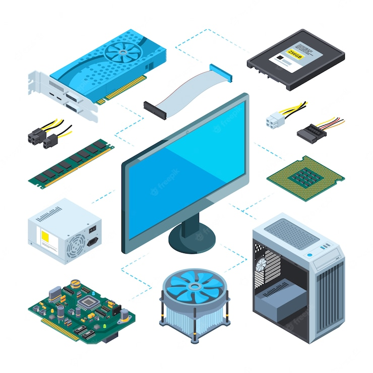

| หน้าแรก | การทำงานของคอมพิวเตอร์ | องค์ประกอบของคอมพิวเตอร์ | การประกอบคอมพิวเตอร์ | ฮาร์ดแวร์คอมพิวเตอร์ |
Hardwarea
 Hardware (ฮาร์ดแวร์) คืออะไร เครื่องมือ เครื่องจักร ชิ้นส่วน และอุปกรณ์ต่าง ๆ ที่สามารถมองเห็น และจับต้องได้ Hardware (ฮาร์ดแวร์) คือ เครื่องมือ เครื่องจักร ชิ้นส่วน และอุปกรณ์ต่าง ๆ ที่สามารถมองเห็น และจับต้องได้ ในระบบคอมพิวเตอร์นั้น ฮาร์ดแวร์ หมายถึง ชิ้นส่วนหรืออุปกรณ์ต่าง ๆ ที่ประกอบกันขึ้นเป็นเครื่องคอมพิวเตอร์ รวมถึงอุปกรณ์ต่อพ่วงต่าง ๆ ด้วย ตัวอย่างของฮาร์ดแวร์ เช่น CPU (ซีพียู), RAM (แรม), Display adapter (ดิสเพล์ อแดบเตอร์), Hard disk (ฮาร์ดดิส), Chipsets (ชิบเซส), Mainboard (เมนบอร์ด), Power supply (พาวเวอร์ ซัพพลาย), จอ Monitor (มอนิเตอร์), Keyboard (คีบอร์ด), Mouse (เมาส์), Modem (โมเดม), Router (เร้าเตอร์),Hub (ฮับ), เครื่องพิมพ์, Flash drive (เฟรชไดช์), Card reader (การ์ด รีดเดอร์), Sound card (ซาวการ์ด), Air card (แอร์ การ์ด), Optical drive (ออฟติคอล ไดรซ์), USB Port (ยูเอสบี พอร์ต) และ สายต่อเชื่อมสัญญาณประเภทต่างๆ เป็นต้น สามารถแบ่งออกเป็นส่วนต่าง ๆ ตามลักษณะการทำงานได้ 4 หน่วย โดยอุปกรณ์แต่ละหน่วยมีหน้าที่การทำงานแตกต่างกัน 1. หน่วยรับข้อมูล Input Unit (อินพุต ยูนิต) 2. หน่วยประมวลผลกลาง CPU : Central Processing Unit (เซนทอล โปรเซสชิง ยูนิต) 3. หน่วยแสดงผล Output Unit(เอาร์พุต ยูนิต) 4. หน่วยเก็บข้อมูลสำรอง Secondary Storage(เซคคอนเดรี่ สตอเรส) ตัวฮาร์ดแวร์ต่าง ๆ นั้นจะไม่สามารถทำงานได้ด้วยตัวเอง แต่ต้องอาศัยชุดคำสั่ง หรือโปรแกรมต่าง ๆ ในการสั่งงาน โดยที่ชุดคำสั่งเหล่านี้อาจจะอยู่ใน ROM (รอม) ของฮาร์แวร์นั้น ๆ อาจจะเป็นชุดคำสั่งจากระบบปฏิบัติการ ชุดคำสั่งจากโปรแกรมขับเคลื่อน Driver (ไดรเวอร์) หรือชุดคำสั่งจากโปรแกรม Soft Ware (ซอฟแวร์) สำเร็จรูปก็ได้ Hardware (ฮาร์ดแวร์) จะมีความหมายตรงข้ามกัน Software (ซอฟแวร์) software(ซอฟแวร์) หมายถึง สิ่งที่จับต้องไม่ได้ มองไม่เห็น เนื่องจากเป็นชุดคำสั่ง หรือโปรแกรมคอมพิวเตอร์ที่สามารถทำงานร่วมกับฮาร์ดแวร์
|